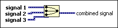

Merge Signals Function
Owning Palette: Signal Manipulation Express VIs
Requires: Base Development System
Merges two or more supported signals, such as scalar numerics, 1D or 2D arrays of numerics, scalar Booleans, 1D or 2D arrays of Booleans, waveforms, or 1D arrays of waveforms, into a single output. Resize the function to add inputs. This function automatically appears on the block diagram when you wire a signal output to the wire branch of another signal.

 Add to the block diagram Add to the block diagram |
 Find on the palette Find on the palette |